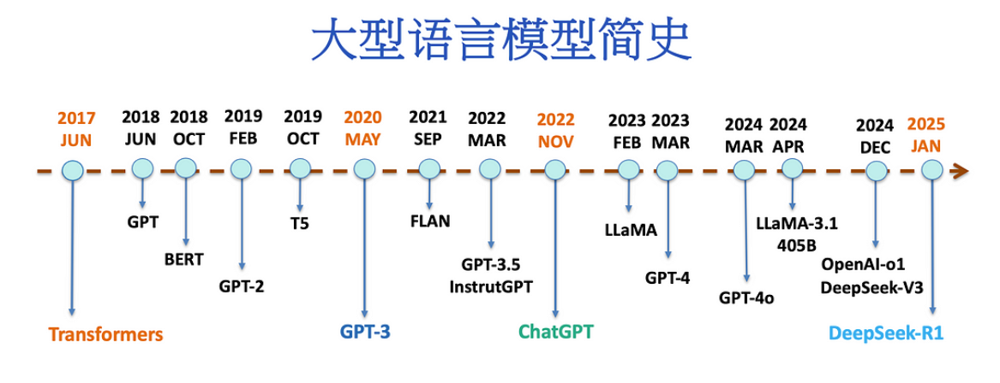
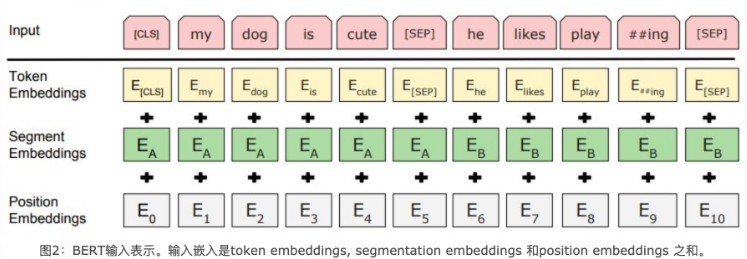
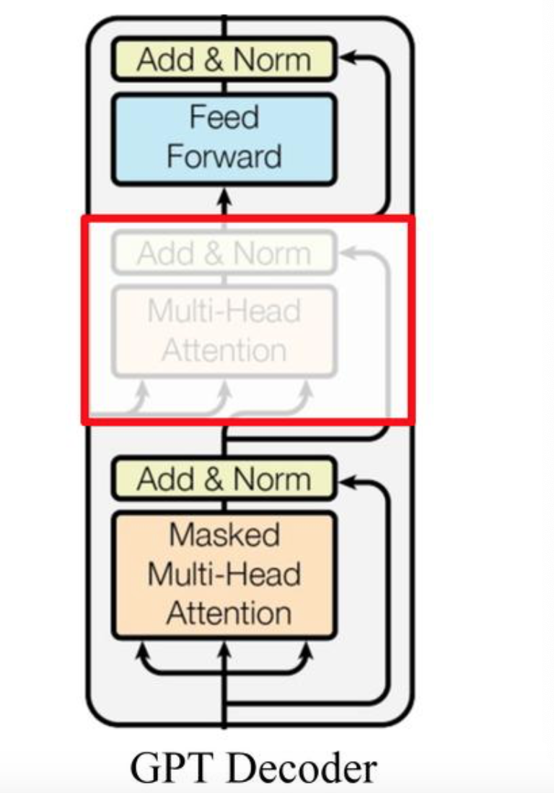
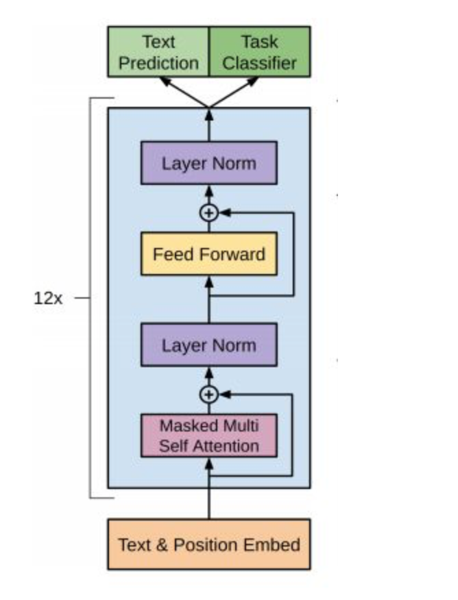
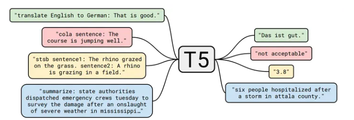

LLM主要类别架构介绍¶
学习目标
- 了解LLM主要类别架构.
- 掌握BERT、GPT、T5等模型原理
LLM主要类别

LLM本身基于transformer架构。自2017年，attention is all you need诞生起，原始的transformer模型为不同领域的模型提供了灵感和启发。基于原始的Transformer框架，衍生出了一系列模型，一些模型仅仅使用encoder或decoder，有些模型同时使用encoder+decoder。

LLM分类一般分为三种：自编码模型（encoder）、自回归模型(decoder)和序列到序列模型(encoder-decoder)。
自编码模型 (AutoEncoder model，AE)¶
AE模型，代表作BERT，其特点为：Encoder-Only, 基本原理：是在输入中随机MASK掉一部分单词，根据上下文预测这个词。AE模型通常用于内容理解任务，比如自然语言理解（NLU）中的分类任务：情感分析、提取式问答。
1. 代表模型 BERT¶
BERT是2018年10月由Google AI研究院提出的一种预训练模型.
- BERT的全称是Bidirectional Encoder Representation from Transformers.
- BERT在机器阅读理解顶级水平测试SQuAD1.1中表现出惊人的成绩: 全部两个衡量指标上全面超越人类, 并且在11种不同NLP测试中创出SOTA表现. 包括将GLUE基准推高至80.4% (绝对改进7.6%), MultiNLI准确度达到86.7% (绝对改进5.6%). 成为NLP发展史上的里程碑式的模型成就.
1.1 BERT的架构¶
总体架构: 如下图所示, 最左边的就是BERT的架构图, 可以很清楚的看到BERT采用了Transformer Encoder block进行连接, 因为是一个典型的双向编码模型.

从上面的架构图中可以看到, 宏观上BERT分三个主要模块:
- 最底层黄色标记的Embedding模块.
- 中间层蓝色标记的Transformer模块.
- 最上层绿色标记的预微调模块.
1.2 Embedding模块¶
BERT中的该模块是由三种Embedding共同组成而成, 如下图

- Token Embeddings 是词嵌入张量, 第一个单词是CLS标志, 可以用于之后的分类任务.
- Segment Embeddings 是句子分段嵌入张量, 是为了服务后续的两个句子为输入的预训练任务.
- Position Embeddings 是位置编码张量, 此处注意和传统的Transformer不同, 不是三角函数计算的固定位置编码, 而是通过学习得出来的.
- 整个Embedding模块的输出张量就是这3个张量的直接加和结果.
1.3 双向Transformer模块¶
BERT中只使用了经典Transformer架构中的Encoder部分, 完全舍弃了Decoder部分. 而两大预训练任务也集中体现在训练Transformer模块中.
1.4 BERT模型的特点¶
模型的一些关键参数为：
| 参数 | 取值 |
|---|---|
| transformer 层数 | 12 |
| 特征维度 | 768 |
| transformer head 数 | 12 |
| 总参数量 | 1.15 亿 |
2. AE模型总结¶
优点：BERT使用双向transformer，在语言理解相关的任务中表现很好。
缺点：
- 输入噪声：BERT在预训练过程中使用【mask】符号对输入进行处理，这些符号在下游的finetune任务中永远不会出现，这会导致**预训练-微调差异**。而AR模型不会依赖于任何被mask的输入，因此不会遇到这类问题。
- 更适合用于语言嵌入表达, 语言理解方面的任务, 不适合用于生成式的任务
自回归模型 (Autoregressive model，AR)¶
AR模型，代表作GPT，其特点为：Decoder-Only，基本原理：从左往右学习的模型，只能利用上文或者下文的信息，比如：AR模型从一系列time steps中学习，并将上一步的结果作为回归模型的输入，以预测下一个time step的值。AR模型通常用于生成式任务，在长文本的生成能力很强，比如自然语言生成（NLG）领域的任务：摘要、翻译或抽象问答。
1. 代表模型 GPT¶
2018年6月, OpenAI公司发表了论文“Improving Language Understanding by Generative Pre-training”《用生成式预训练提高模型的语言理解力》, 推出了具有1.17亿个参数的GPT（Generative Pre-training , 生成式预训练）模型.
与BERT最大的区别在于GPT采用了传统的语言模型方法进行预训练, 即使用单词的上文来预测单词, 而BERT是采用了双向上下文的信息共同来预测单词.正是因为训练方法上的区别, 使得GPT更擅长处理自然语言生成任务(NLG), 而BERT更擅长处理自然语言理解任务(NLU).
1.1 GPT模型架构¶
看三个语言模型的对比架构图, 中间的就是GPT:
从上图可以很清楚的看到GPT采用的是单向Transformer模型, 例如给定一个句子[u1, u2, ..., un], GPT在预测单词ui的时候只会利用[u1, u2, ..., u(i-1)]的信息, 而BERT会同时利用上下文的信息[u1, u2, ..., u(i-1), u(i+1), ..., un].
作为两大模型的直接对比, BERT采用了Transformer的Encoder模块, 而GPT采用了Transformer的Decoder模块. 并且GPT的Decoder Block和经典Transformer Decoder Block还有所不同, 如下图所示:

如上图所示, 经典的Transformer Decoder Block包含3个子层, 分别是Masked Multi-Head Attention层, encoder-decoder attention层, 以及Feed Forward层. 但是在GPT中取消了第二个encoder-decoder attention子层, 只保留Masked Multi-Head Attention层, 和Feed Forward层.
注意: 对比于经典的Transformer架构, 解码器模块采用了6个Decoder Block; GPT的架构中采用了12个Decoder Block.

1.2 GPT模型的特点¶
模型的一些关键参数为：
| 参数 | 取值 |
|---|---|
| transformer 层数 | 12 |
| 特征维度 | 768 |
| transformer head 数 | 12 |
| 总参数量 | 1.17 亿 |
优点
- 在有监督学习的12个任务中, GPT在9个任务上的表现超过了state-of-the-art的模型
- 利用Transformer做特征抽取, 能够捕捉到更长的记忆信息, 且较传统的 RNN 更易于并行化
缺点
- GPT 最大的问题就是传统的语言模型是单向的.
- 针对不同的任务, 需要不同的数据集进行模型微调, 相对比较麻烦
2. AR模型总结¶
优点：AR模型擅长生成式NLP任务。AR模型使用注意力机制，预测下一个token，因此自然适用于文本生成。此外，AR模型可以简单地将训练目标设置为预测语料库中的下一个token，因此生成数据相对容易。
缺点：AR模型只能用于前向或者后向建模，不能同时使用双向的上下文信息，不能完全捕捉token的内在联系。
序列到序列（Sequence to Sequence Model）¶
encoder-decoder模型同时使用编码器和解码器。它将每个task视作序列到序列的转换/生成（比如，文本到文本，文本到图像或者图像到文本的多模态任务）。对于文本分类任务来说，编码器将文本作为输入，解码器生成文本标签。Encoder-decoder模型通常用于需要内容理解和生成的任务，比如机器翻译。
1. 代表模型T5¶
T5 由谷歌的 Raffel 等人于 2020年7月提出，相关论文为“Exploring the Limits of Transfer Learning with a Unified Text-to-Text Transformer”. 该模型的目的为构建任务统一框架：将所有NLP任务都视为文本转换任务。

比如英德翻译，只需将训练数据集的输入部分前加上“translate English to German（给我从英语翻译成德语）” 就行。假设需要翻译"That is good"，那么先转换成 "translate English to German：That is good." 输入模型，之后就可以直接输出德语翻译 “Das ist gut.”。 对于需要输出连续值的 STS-B（文本语义相似度任务）， 也是直接输出文本。
通过这样的方式就能将 NLP 任务都转换成 Text-to-Text 形式，也就可以**用同样的模型，同样的损失函数，同样的训练过程，同样的解码过程来完成所有 NLP 任务。**
1.1 T5模型架构¶
T5模型结构与原始的Transformer基本一致,除了做了以下几点改动：
- 作者采用了一种简化版的Layer Normalization，去除了Layer Norm 的bias；将Layer Norm放在残差连接外面。
- 位置编码：T5使用了一种简化版的相对位置编码，即每个位置编码都是一个标量，被加到 logits 上用于计算注意力权重。各层共享位置编码，但是在同一层内，不同的注意力头的位置编码都是独立学习的。一定数量的位置Embedding，每一个对应一个可能的 key-query 位置差。作者学习了32个Embedding，至多适用于长度为128的位置差，超过位置差的位置编码都使用相同的Embedding。
1.2 T5模型的特点¶
模型的一些关键参数为：
| 参数 | 取值 |
|---|---|
| transformer 层数 | 24 |
| 特征维度 | 768 |
| transformer head 数 | 12 |
| 总参数量 | 2.2 亿 |
2. encoder-decoder模型总结¶
优点：T5模型可以处理多种NLP任务，并且可以通过微调来适应不同的应用场景，具有良好的可扩展性；相比其他语言生成模型（如GPT-2、GPT3等），T5模型的参数数量相对较少，训练速度更快，且可以在相对较小的数据集上进行训练。
缺点：由于T5模型使用了大量的Transformer结构，在训练时需要大量的计算资源和时间; 模型的可解释性不足。
主流模型架构-Decoder-only¶
LLM之所以主要都用Decoder-only架构，除了训练效率和工程实现上的优势外，在理论上是因为Encoder的双向注意力会存在低秩问题，这可能会削弱模型表达能力，就生成任务而言，引入双向注意力并无实质好处。而Encoder-Decoder架构之所以能够在某些场景下表现更好，大概只是因为它多了一倍参数。所以，在同等参数量、同等推理成本下，Decoder-only架构就是最优选择了。
小结¶
- 本小节主要介绍LLM的主要类别架构：自回归模型、自编码模型和序列到序列模型。
- 分别对不同类型架构的代表模型如：BERT、GPT、T5等相关模型进行介绍